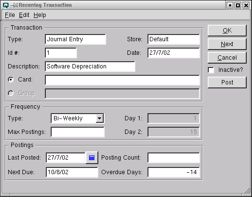

Recurring Transaction

The "Recurring Master" screen is used to create/edit a recurring
transaction record and to post recurring transactions. There are
transactions such as the payment of rent that recur at regular
intervals. Customer billings such as cable television billings recur
each month to multiple customers. By creating a Quasar recurring
transaction, you will not only save time, but you will also help enure
transactions are recorded in a timely manner.
Transaction
Displays information about the transaction to recur.
-
- Type - Displays the recurring transaction type.
-
- Customer Invoice - Designates that the recurring
transaction is a customer invoice.
- Journal Entry - Designates that the recurring entry is a
basic journal entry
- Cheque - Designates that the recurring entry is a cheque
- Vendor Invoice - Designates that the recurring entry is a
vendor invoice
- Vendor Payment - Designates that the recurring entry is a
vendor payment
- Id# - The id number of the transaction to recur.
- Store - The store in which the transaction is to recur.
- Date - The date of the original transaction.
- Description - The description the defines the transaction.
- Customer/Vendor - Toggle on to have the recurring
transaction recur for only one customer or card.
- Group - Toggle on to have the recurring transaction recur
for all the cards linked to the group. For example, if the recurring
transaction is for a 30.00 cable tv billing. All customers in the
group entered will be billed 30.00 when the recurring transaction is
posted.
Frequency
Define the frequency of that the transaction will recur.
-
- Type - Select a frequency type. You may select daily,
weekly, bi-weekly, semi-monthly, monthly, quarterly, semi-annually,
annually or other.
- Max Postings - Select the maximum number of repetitions
for the recurring transaction.
- Day 1 - If you have selected "semi-monthly" as the
frequency type you must enter the first day of each month that the
recurring transaction will occur.
- Day 2 - If you have selected "semi-monthly" as the
frequency type you must enter the second day of each month that the
recurring transaction will occur.
Postings
The posting section displays data about previous and future
postings.
-
- Last Posted - Displays the last date that the recurring
transaction was posted.
- Next Due - Displays the next date that the recurring
transaction will be due for posting.
- Posting Count - Displays the number of times this
recurring transaction has been posted.
- Overdue Days - Displays the number of days the recurring
transaction is overdue. A positive number denotes the number of days
the transaction is overdue. A negative number denotes the number of
days until the next posting date.
Post
Click on "Post" to post the recurring transaction.